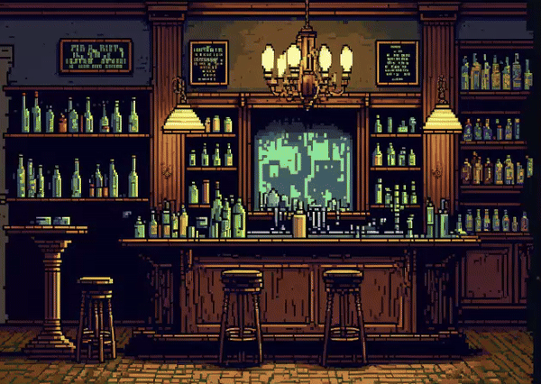
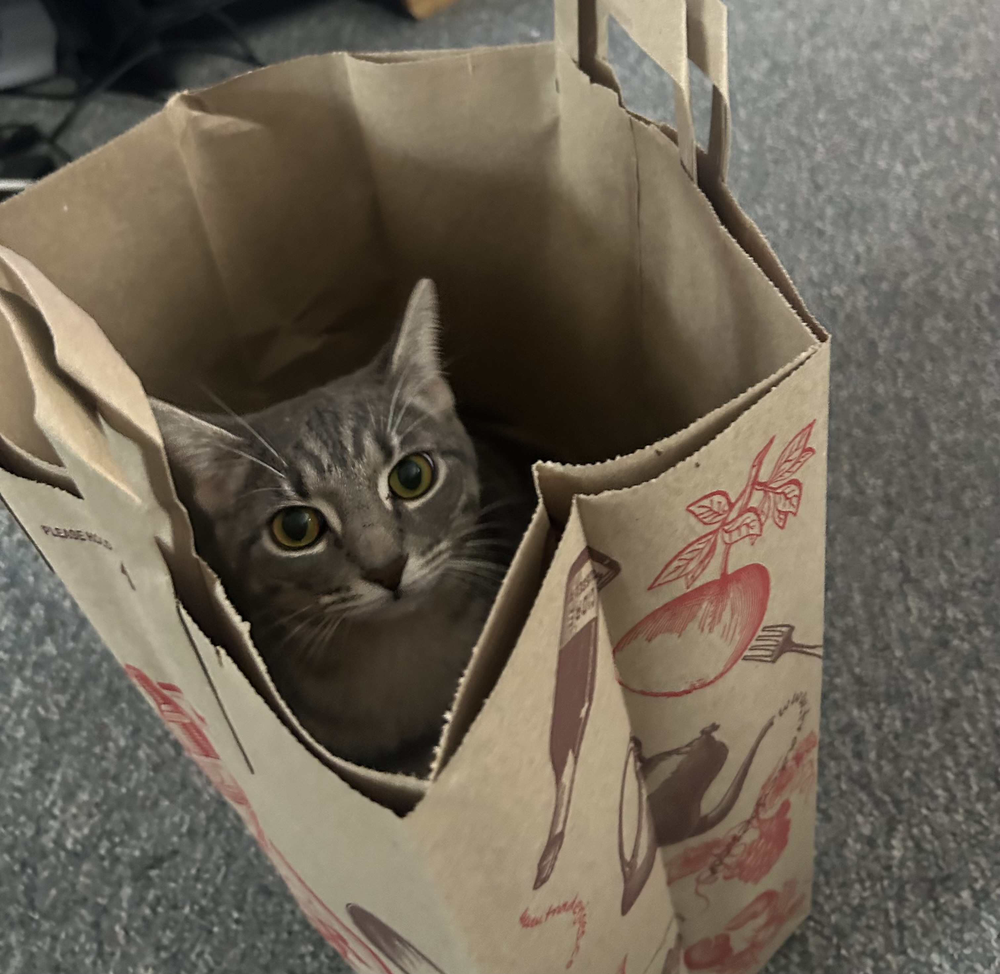
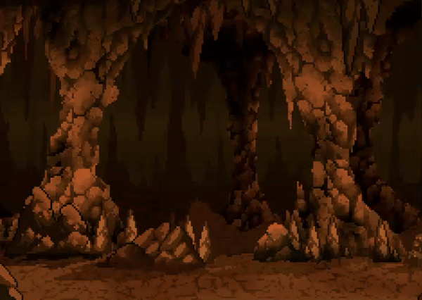
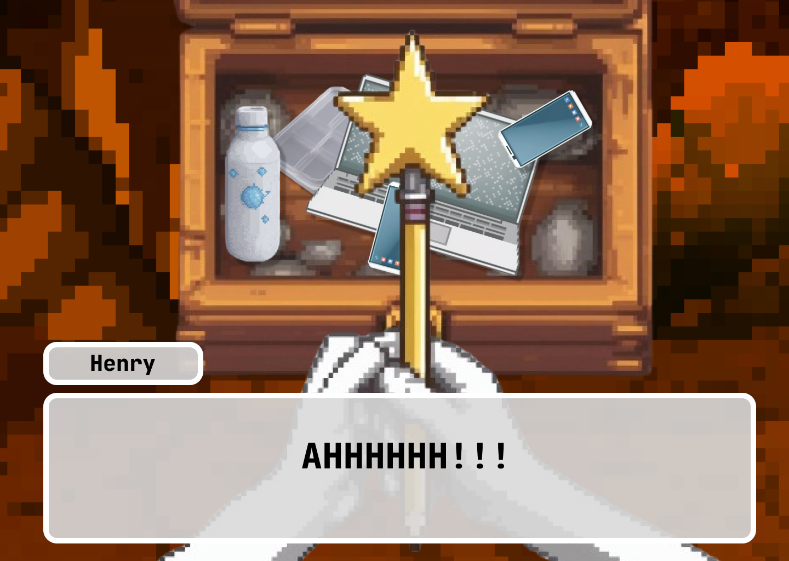
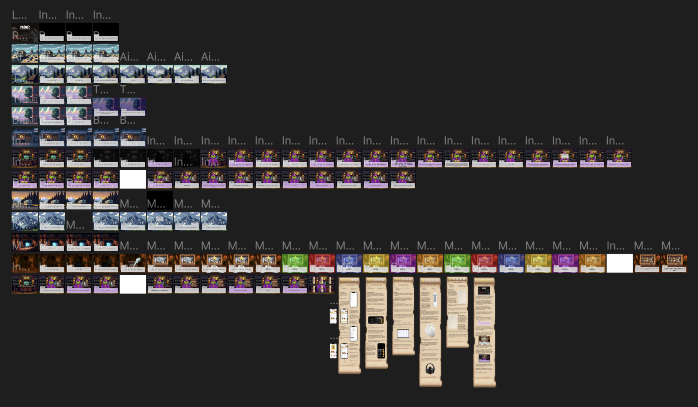

I wanted to showcase my skills in Figma by creating an interactive adventure game that highlighted some of my redesigns through the plot of the story.

Project Type
Personal Project
Roles
UX Designer: Justin Tran
Tools
Figma
Adobe Stock
AI
Duration
April 2024
Problem
I wanted to showcase some of my website, app, and product redesigns in a unique way.
Solution
I love playing adventure games, learning about AI, and wanted to improve at using Figma. As a way to combine all three of these, I decided to make an interactive adventure game.
The Process
I came up with a basic storyboard, which focuses on Henry, a UX Designer, and his cat, Spoon, who travel the world together in their RV. AI has taken over the lands, which has wiped out all of the UX Designer race. It's up to Henry and his cat to save the realm.
These characters were largely based on my loud, sassy cat named Mushroom and myself.

To create some irony, I utilized AI to generate all the backgrounds, characters, and props.
With these elements, I added my own dialogue, text bubble elements, and utilized Figma's smart animate to create depth/movement in some of the scenes.

The game takes place through the eyes on Henry, so I wanted to make a first person game. This was shown in the wand scene, where you can only see his two arms holding the wand. This create a more immersive experience for the user.

Finally, I connected all of the screens for the prototype and tested for any bugs.
Overall, the final game had 128 different screens and took me around 72 hours.

What I learned...
With some user testing, I found out that users tried navigate scenes by clicking the background. I should have gone back and linked both the text bubble and the background to trigger an transition.
Next time I design a game in Figma, I would like to dedicate more time, as this project had a strict deadline. I would have added audio and more interactive choices that could alter the outcome of the story.